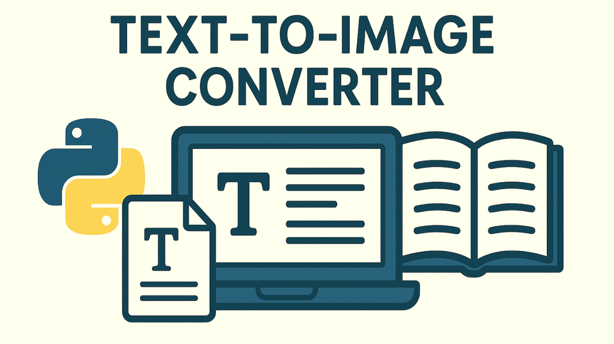
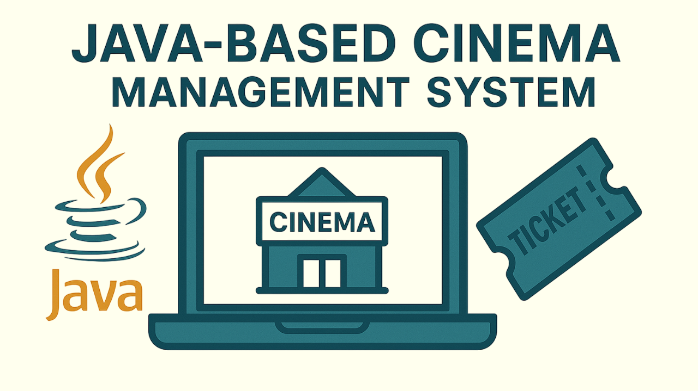

A Python program that scans and converts text from images into an editable format. It offers fine-tuning tools to adjust color, angle, and remove noise for improved OCR performance. The tool works with both single-page files and large books, making it versatile for different document types.
A Python-based security tool that allows users to check whether their password has been leaked in any known data breaches. The program ensures user data privacy, with a focus on security, ensuring that no personal data is sent or shared anywhere.

A Java program developed as part of a university project. This program is a business model that allows users to manage cinema operations, including setting up and editing cinema buildings, sales, screens, seat grids, prices, available movies, and more. It utilizes advanced features like cascade deletion, precise parameter settings, and an integrated booking system with user account management.
An interactive web-based program that allows users to test their reaction times in an engaging and fun way. Currently in development, it aims to provide an interesting and challenging experience for users to measure and improve their reflexes.